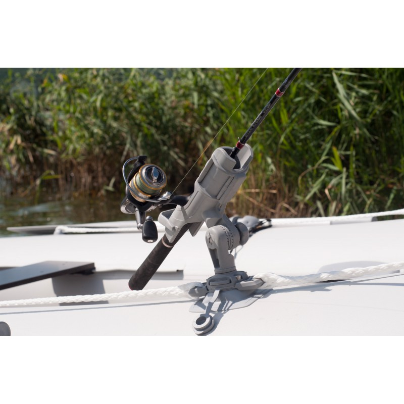

Meškerės
 Meniu Pagrindinis APIE ĮMONĘ PRISTATYMAS IŠPARDUOTUVĖ KONTAKTAI PIRKIMO-GRĄŽINIMO SĄLYGOS +370 676 77808
Kategorijos
Kategorijos Gyvi Masalai Spiningavimas Meškerės Surenkamos ir vienadalės Tailwalk Tict BEFO ICE CUBE INBITE SRAM DAIWA Tenryu Shimano Favorite Major Craft CROSTAGE Finetail N-One Solpara Triple Cross SAVAGE GEAR MPP XLNT PARABELLUM BLACK SAVAGE FINEZZE ROADRUNNER LRF CCS LIGHT RANGE GOLDEN MEAN SALMO Okuma DEAD RINGER RTX SAFINA-X ALARIS EPIXOR AZAKI FUEL CX SPIN HEXANA OCTANA CERROS HELIOS ONE LURE MANIA PSYCHO PERCH Pontoon21 Volzhanka CRAZY FISH Lucky John Maximus NAPPA ST.CROIX Džerkinės, kastinginės Tailwalk Daiwa Varivas Okuma St.Croix Savage Gear DAM Teleskopinės Shimano Mikado Salmo Dropshot Ritės Su priekiniu stabdžiu Shimano RYOBI Okuma Tica Daiwa DAM Favorite Abu Garcia Abu Garcia Su galiniu stabdžiu Okuma Tica DAM Multiplikatorinės Shimano Okuma Abu Garcia TiCA Daiwa Atsargines dalys Valai Monofilomentiniai Pinti Sufix Berkley Spiderwire Daiwa DUEL Gosen Sunline YGK Shimano WFT Savage Gear Fluorocarbon Vobleriai Kosadaka Cord Ion Mascot Mirage Flash Boxer Raven Roger Beagle Orb Synthez Meta Intra Inborn Kurado Mystic Quant Ultima Rat Host Troll Volt Decoy Gravity Costa Glide Vox popper Sol popper Sks popper Next popper SKY Popper Takao Cougar Mamba Spell Brisk Gemini Maru ZLN Bonga Convoy Rapala Scatter Rap Balsa Xtreme MaxRap X-Rap Flat Rap Clackin Tail Dancer Original Floater Count Down Fat Rap Ultra Light Shad Rap Husky Jerk Rippin Rap DIVES-TO Shadow Rap Shad Dancer Skitter POP Team Esko Rip Stop Jointed Preference Floating Magnum JACKALL ZipBaits PONTOON 21 Crack Jack Greedy Guts Shallow First by Shanin Saunda Bet A Shad Cablista Hypnose Chaos Red Rag Alter Idem Mojarrilla GagaGoon Kalikana Gem Deephase Moby Dick Bullyboo Cheeky Cheerful Marionete Minnow Tantalisa Bet-a VIB Baby red rag Preference Minnow Beat bull Dexter minnow Preference shad DeepRey Agarron Loco perro Danzante J LUCKY CRAFT Pointer FlashMinnow Staysee Blade cross Sammy Megabass DEPS O.S.P. Strike Pro DUO Yo-Zuri YAMARIA Usami Savage Gear JigWobbler Hardbaits Jerk BASSDAY Bumble Lure Jackson GOLDEN MEAN DUEL GAN CRAFT Smith DAIWA Lucky john Ima Evergreen Sebile Risto Rap Guminukai Keitech Savage Gear Reins FOX Lucky John Kosadaka Fanatik Daiwa Berkley Bait Breath Storm Owner Strike Pro Traper Vartiklės Kuusamo Rhino Rapala Lucky John Kibs Crazy fish Akara Ali Balzer DAM Sukriukės MEPPS Aglia Aglia long Black Fury LongCast Bug XD Aglia Decorees Aglia Mouche Aglia Fluo Aglia Fluo Micropigments Aglia Furia Aglia TW Winner Comet Lusox Aglia Blanc/Rouge Savage Gear SUKRĖ LT DAM Abu Garcia Spinerbaitai Lucky Craft Jackall Lucky John Bercley DAM Savage Gear Galvakabliai Fudo Galvakabliai Galvakabliai Owner Čeburaškos Volframiniai Galvakabliai Pavadėliai Trišakiai kabliai Kabliai ofsetiniai, vienšakiai, dvišakiai Masalų kvapai Velkiavimo įranga Sistemėlės ir jų elementai Karpių Žvejyba Meškerės Daiwa Shimano Fox Okuma Prologic Kitos DAM Larus Ritės Spro Okuma Tica Daiwa Fox Shimano Salmo Sistemėlės ir jų elementai Fox Gardner Korda Prologic Mad Kiti Valai Monofilamentiniai Fluorocarbon Pintas pavadėliams Leadcore Shockleader Zigrig Kabliukai Fox Gardner Korda Prologic Cobra Maruto Kiti Svareliai Pva Kibimo indikatoriai Elektroniniai Delkim Prologic Ron Thompson Sundridge Larus Kiti MAD Svingai Stovai Dėklai Graibštai Masalai ir jaukai Dynamite baits Boiliai Peletės Jaukai Priedai Skysčiai Mainline Timar mix Kiti Aksesuarai FOX KORDA DAM PROLOGIC MAD Daiwa GARDNER DYNAMITE BAITS Kiti Palapinės Kėdės, gultai, miegmaišiai Deepex Traper Dugninė žvejyba Ritės Su priekiniu stabdžiu Shimano Daiwa Salmo Okuma Tica Su galiniu stabdžiu Shimano Okuma Tica Salmo SPRO Ryobi Larus Mitchell Kiti gamintojai Su dvigubu stabdžiu SPRO Salmo TiCa Okuma Meškerės Feederiai Daiwa Shimano Okuma DAM Salmo Larus Cormoran Trabucco Siweida ATORA Prologic Teleskopinės Valai Monoflamentiniai Pinti Jaukai Dynamite Baits Sensas Traper Gut-Mix Priedai Deepex Šėryklėlės, Sistemėlės Aksesuarai Kibimo indikatoriai, baterijos DAM Kabliukai Owner Kamatsu Fudo Svareliai Kėdės, paltformos, priedai Volzhanka Plūdinė žvejyba Meškerės Surenkamos Shimano Salmo Okuma Cormoran Daiwa DAM Teleskopinės Ritės Su priekiniu stabdžiu Shimano RYOBI Daiwa Okuma Tica Su galiniu stabdžiu Shimano Ryobi Okuma Tica Mitchell DAM Jaukai ir priedai Jaukai Sensas Dynamite Traper Priedai Plūdės Slankiojanti Srovinė Kabliukai Owner Kamatsu Fudo Valai Aksesuarai Deepex Jūrinė žvejyba Meškerės PENN D.A.M. Okuma WFT Savage Gear AbuGarcia SPRO Ron Thomson Shimano Balzer Surf meškerykočiai Daiwa Ritės TiCA PENN Okuma Shimano Accurate SurfMaster Daiwa Valai Guminukai Aksesuarai Sistemėlės Pilkeriai Šamų žvejyba Meškerės Kvokai Sistemėlės, masalai, jaukai Valai, pavadėliai Aksesuarai Muselinė žvejyba Meškerės Ritės Masalai Valai, pavadėliai Aksesuarai Poledinė žvejyba Meškerytės ir spiningėliai Meškerytės Spiningėliai Sargeliai Lavsaniniai Metaliniai Monokristal Stiklo pluošto Titaniniai Guminiai Ritės Beinercinės Inercinės Multiplikatorinės DAM Valai Monofilamentiniai Pinti Fluorocarbon Balansyrai Rapala Kuusamo Shark Quickmaster Lucky John Izumi Lunkerhunt Strike Pro Blizgutės Kuusamo Masalai Palijoms Mistrall ECO PRO Lietuviškos Blizgutės Kitos AKARA Aisė Avižėlės Volframinės Stintinės Stintinės sistemėlės Paprastos Vėgelinės Kuusamo Švininės Pavadėliai Dėžutės Žieminės dėžės Dėklai Aksesuarai Grąžtai, peikenos Palapinės Jaukai Masalai Kabliukai, grandinėlės, trišakiai, šokliukai Apranga, avalynė Kostiumai Neskęstantys kostiumai Žieminiai ir demisezoniniai kostiumai Shimano Norfin Sundrige Fox Runos DAM Mullion Kuusamo Prologic Rapala Novatour DAIWA Imax Savage Gear MAD AlaskaN Vasariniai kostiumai Norfin DAM Rapala Scierra Savage Gear Prologic Avalynė Savage Gear Lemigo SeaFox Prologic ROCKY Gamo Norfin Imax AKU Nordman Torvi Apatiniai Pirmo sluoksnio Antro sluoksnio Bridkelnės, braidymo batai Bridkelnės Braidymo batai Akiniai nuo saulės Rapala Shimano FOX DAM Prologic Vision Striukės Kelnės Šortai Bliuzonai Kepurės, Šalikai, Kaukės Pirštinės Kojinės Liemenės Marškinėliai Vasarinės kepuraitės Gelbėjimosi liemenės Laisvalaikio prekės Kėdės Prožektoriai Lietsargiai Suvenyrai Indai Kita Stalai Palapinės Aksesuarai Dėžės Plano Larus Meiho Shimano Savage Gear Peiliai RAPALA Marttiini Kiti Krepšiai, kuprinės Rapala Salmo DAM Shimano Prologic IMAX Ron Thompson Savagear Behr Daiwa MAD Norfin Runos Scierra MADCAT FOX Plano Okuma Įrankiai Rapala Savage Gear Ron Thompson Spro DAM Daiwa Kiti Graibštai Dėklai Smulkmenos Tepalai ir pagalbinės medžiagos Bučiukai, tinkleliai Kibirai Svarstyklės Elektronika Echolotai Humminbird LOWRANCE Mark serija Hook2 REVEAL serija Hook2 serija Elite Ti serija HDS Gen3 serija FishHunter Deeper Raymarine Praktik Kameros Priedai Baterijos Varikliai, valtys Valtys Meluga Taifun Larus Runos Aqua Storm Savage Gear Varikliai Minn Kota Haswing Akumuliatoriai ir priedai Valčių priedai Išparduotuvė Dovanų kuponai Akcijos Vobleriai OneTen Prisijunkite Krepšelis 0 - 0,00 EUR Meškerės Pagrindinis Plūdinė žvejyba Meškerės GERAIFiltruoti pagal
Kategorijos
Kategorijos
Surenkamos (19) Teleskopinės (21)Prekės ženklas
Prekės ženklas
Akara (1) DAIWA (2) DAM (4) Mikado (Lenkija) (2) Nappa (3) Okuma (8) Ron Thompson (2) Salmo (1) Shimano (5) Siweida (1)Meškerės
Aktualumas Pavadinimas, A - Z Pavadinimas, Z - A Kaina, mažiausia - didžiausia Kaina, didžiausia - mažiausia Puslapis 1 2 FiltrasAktyvūs filtrai
Sumažinta kaina -19%MEŠKERĖ VOLZHANKA MATCH 420CM 5-25G
52,90 EUR 42,85 EUR
Teleskopinė Meškerė Wind Blade Bolo 4m 10-30g
18,90 EURTeleskopinė Meškerė Siweida Discovery Tele Match...
32,90 EURTeleskopinė Meškerė Match Victory 3.9m 10-40g
41,90 EURTeleskopinė Meškerė Nikita
47,90 EURTeleskopinė Meškerė Hydrax
46,90 EURMeškerė DAM Carbon Tele Pocket Pole
46,90 EURDAM Sensomax II Tele Match 10-30g
Nepakanka prekės atsargų 51,90 EURMeškerė Daiwa Aqualite Sensor Float 3.60-4.20m 10-35g
Nepakanka prekės atsargų 93,90 EURMeškerė Ron Thompson Cool Tech Telepole + Sistemėlė
6,90 EURMeškerė Ron Thompson C14 Pro Pellet Wagler
Nepakanka prekės atsargų 24,04 EURTeleskopinė meškerė VAN-DEN-EYNDE Nano Core Tele...
56,90 EURTeleskopinė meškerė Surfmaster Admiral 4.00m, 10-30g
8,00 EURTeleskopinė meškerė Mikado Silver Sword 5.00m, 25g
40,26 EURTeleskopinė meškerė Salmo Diamond Medium 6.00m, 3-20g
49,00 EURTeleskopinė meškerė Daiwa Aqualite Sensor Float...
85,00 EURTeleskopinė meškerė Akara Explorer Bolo Match 4.00m,...
9,85 EURTeleskopinė meškerė Mikado Crystal Line Bolognese...
44,89 EURTeleskopinė meškerė Shimano Vengeance AX Tele...
65,00 EURTeleskopinė meškerė Shimano Vengeance AX Tele...
63,00 EURTeleskopinė meškerė Nappa Tele Match 4.50m, 25g
74,00 EURTeleskopinė Meškerė VDE-R Team Bolo MX2 6.00m, 10-25g
Nepakanka prekės atsargų 79,00 EURMeškerė Shimano Speedmaster AX Match 4.50m, 20g
Nepakanka prekės atsargų 219,00 EURMeškerė Nappa Match II 4203 4.20m, 25g
Nepakanka prekės atsargų 52,00 EUR Puslapis 1 2 Filtras Rodyti 24 Prekių 40 prekiųUžsirašyti naujienraščiui Mes niekada nesidalinsime jūsų el. pašto adresu su trečiomis šalimis
Sekite mus
FacebookMūsų kontaktai
K. Baršausko g. 53 Kaunas +37067677808 info@zvejoklis.lt K.Baršausko g. 53, KaunasI - V 9.00 - 19.00
VI 9.00 - 16.00
VII nedirbame
R.Kalantos g. 121, Kaunas
I - IV 9.00 - 18.00
V 9.00 - 19.00
VI 9.00 - 16.00
VII nedirbame Pristatymas Susisiekite Apie įmonę Prisijungimas Parduotuvės Sekite mus Facebook Google maps UAB "Žvejoklis" © 2009 - 2020